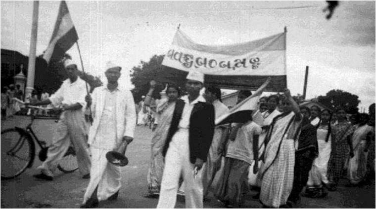

1942

The Quit India Movement, also known as the August Kranti Movement, was a movement launched at the Bombay session of the All India Congress Committee by Mahatma Gandhi on 8th August 1942, during World War II, demanding an end to British rule in India. The All India Congress Committee launched a mass protest demanding what Gandhi called "An Orderly British Withdrawal". The movement gave the slogans 'Quit India' or 'Bharat Chodo'. Gandhi gave the slogan to the people - 'Do or die'. it was supposed to be a peaceful non-violent movement aimed at urging the British to grant India independence.
The resolution stated the provisions of the movement as:
-An immediate end to British rule over India.
-Declaration of the commitment of free India to defend itself against all kinds of imperialism and
fascism.
-Formation of a provisional government of India after British withdrawal.
-Sanctioning a civil disobedience movement against British rule.
-Gandhiji gave various instructions to sections of the public
-The British government responded to the call of Gandhi by arresting all major Congress
leaders the very next day.
-Over 100000 people were arrested in connection with this movement.
-The government resorted to violence in order to quell the agitation.
-Despite heavy-handed suppression by the government, the people were unfazed and continued their
struggle.
-Even though the government said that independence could be granted only after the end of the war, the
movement drove home the point that India could not be governed without the support of the Indians.
-The movement placed the demand for complete independence at the top agenda of the freedom movement.
-Public morale and anti-British sentiment were enhanced.